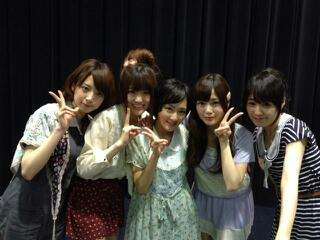
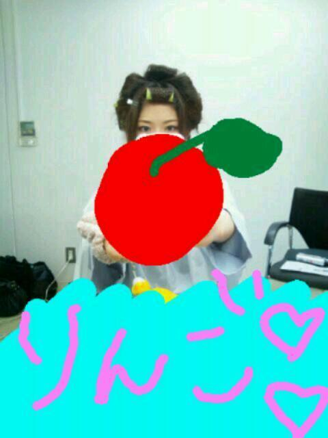

2012/0530Wedかなりっ(o・・o)
おはりんごっ(o・・o)
さゆりんごっ(o・・o)
みなさんこんにちは♪
松村沙友理なのですっ(o・・o)
名古屋のミニ個別握手会、
おしゃれ学園のミニライブ
ありがとうございました♪
ミニ個別は
いつもよりゆったりで
いっぱいお話できて
めっちゃ楽しかったですo(*⌒―⌒*)o
ミニ個別おすすめですよー＼(^_^)(^_^)／
次は大阪や〜(・∀・)☆
地元や〜(*^^*)♪
実家には１0月から帰ってません〜＼(^^)／
やから、お仕事で大阪行けるんが
地味に嬉しいっす(´；ω；`)
土曜日までお仕事頑張るぞー＼(^_^)(^_^)／
皆さんも一緒に頑張ろ〜(*^^*)
早く会いたいぞ〜っ＞＜！照

そおいえば
HTC ＪのＣＭが
結構流れてるようで！
皆でめっちゃ喜んでます( ；∀；)☆
HTC Ｊの魅力が
伝わるとええな(>_<)
撮影の裏側とかも公開されてるようです！
みなさんｗｅｂをちぇっく！(￣▽￣)b
この前、お着物で
撮影さしていただきました〜＼(^^)／
楽しかった〜(*^^*)
じゃじゃ〜ん♪

サザエさんみたい♪笑
これは完成ちゃうよ！
けど、さゆりんのお気に入りです♪笑
ほなら、またね〜(*^^*)♪
最後に一つだけ！
さゆりんは気持ちが落ち込んでしまったり、嫌なことがあったら
取りあえず寝ます！
寝てリセットして
もう一回考える！
それか、声にだして笑う！
面白いことなくても
『あはははは〜ヽ(・∀・)ノ』って
笑ってみる！
そしたらなんか楽しくなる気がします。笑
みなさんはそんな時どうしてますか〜(*^^*)？
ほなら、ばいなりんご〜っ(o・・o)/~
さゆりんごっ(o・・o)
2012/05/30 14:24
コメント(433)
さゆりん
バーン！
落ち込んだら
とりあえずひなちまのことを考えます照
バーン！
落ち込んだら
とりあえずひなちまのことを考えます照
笑うことは良いことだよ(￣∀￣)♪
ミニ個別いきたいけど遠い…
本当に
髪型サザエさんみたい(笑)
気持ちがしけてたりしたら
寝る
とにかく寝る!!
本当に
髪型サザエさんみたい(笑)
気持ちがしけてたりしたら
寝る
とにかく寝る!!
ミニ握いこかな？
落ち込んだときはサッカーに限る！
てか好きなことしたらホッとするよね♪
落ち込んだときはサッカーに限る！
てか好きなことしたらホッとするよね♪
HTCのCMよく見るようになったね。残念ながら他キャリア使ってるから買えないけど・゜・(ノД`)・゜・。
ミニ個別行けば良かったと後悔してるよ。
次回のシングルからは行くようにするお(´;ω;`)
落ち込んだら→乃木どこを見る！おいシャンを聴く！
アイドルは、人を元気に笑顔にする力があるからね！さゆりんも人を幸せに出来る存在なんだよ(´∀`)
ミニ個別行けば良かったと後悔してるよ。
次回のシングルからは行くようにするお(´;ω;`)
落ち込んだら→乃木どこを見る！おいシャンを聴く！
アイドルは、人を元気に笑顔にする力があるからね！さゆりんも人を幸せに出来る存在なんだよ(´∀`)
(;ﾟДﾟ)!サザエさゆりん！？
笑
幕張の全握行きま～す(*´∀｀*)
いまから楽しみっ！！
最近さゆりんにはまりました＼(^o^)／握手会いってもいいかなー＼(^o^)／？
サザエさぁああああん(｡ﾟωﾟ)ﾉ
名古屋ミニ個別お疲れ様^^
最近よくHTCのCMみるよね！
親が買いそう.....笑
俺も嫌なこととかあったら寝て解決するよ^^
大体寝れば大丈夫＼(￣∀￣*)/
☆☆☆(なお・ω・やん)☆☆☆
名古屋ミニ個別お疲れ様^^
最近よくHTCのCMみるよね！
親が買いそう.....笑
俺も嫌なこととかあったら寝て解決するよ^^
大体寝れば大丈夫＼(￣∀￣*)/
☆☆☆(なお・ω・やん)☆☆☆
おっと～でっかい林檎でやんすね～～！(＾＾)！！(＾＾)！
確かにい～ぱい髪どめつけてはりますな～！(＾＾)！o(^-^)o
そうそう、乃木どこっ見ましたよ～。地で正座が必須なんでやんすな(＃^.^＃)o(^-^)o
さゆりん丸の生活には。そーいう雑誌から取材とか来ちゃうったらいいでやんすね～。
アニメに正座（笑）。テリトリーひろいでやんすな～松村ちゃんって(＾＾)＼(゜゜)(^O^)/
そうそうなんかイベントにもでたんでやんすな～～(＠_＠)(^^ゞよかこつどすな～
そーきゃあ一回もってのがなんか凄いでやんすよね～。畠中ちゃんとかはもうかなりの回数
帰ってたりしますだぎゃ(∪o∪)。。。o(^-^)oやっぱその辺は実年齢がでとりますな～も
確かにい～ぱい髪どめつけてはりますな～！(＾＾)！o(^-^)o
そうそう、乃木どこっ見ましたよ～。地で正座が必須なんでやんすな(＃^.^＃)o(^-^)o
さゆりん丸の生活には。そーいう雑誌から取材とか来ちゃうったらいいでやんすね～。
アニメに正座（笑）。テリトリーひろいでやんすな～松村ちゃんって(＾＾)＼(゜゜)(^O^)/
そうそうなんかイベントにもでたんでやんすな～～(＠_＠)(^^ゞよかこつどすな～
そーきゃあ一回もってのがなんか凄いでやんすよね～。畠中ちゃんとかはもうかなりの回数
帰ってたりしますだぎゃ(∪o∪)。。。o(^-^)oやっぱその辺は実年齢がでとりますな～も
ちわりんご！たくとんです(^ー^)
落ち込んだら寝る。いいね！(^o^)
俺は落ち込んだら小さな声でぶつぶつ言って発散させます(笑)あと歌うかな(^ー^)
CMよく見かけるね！今日も見たよ♪
ほなまたな！
落ち込んだら寝る。いいね！(^o^)
俺は落ち込んだら小さな声でぶつぶつ言って発散させます(笑)あと歌うかな(^ー^)
CMよく見かけるね！今日も見たよ♪
ほなまたな！
こんにちりんご☆
ゴメンなぁ名古屋のミニ個別は教職があって行けんかったんよ(>_<)
んでも今週の大阪ミニ個別行くからさゆりん待っててなぁ(^^)
HTC Jのさゆりんがエスカレーターでかずみんと撮り合いしてるとき
めっちゃ可愛い(//▽//)
あと後ろの外国人気にしてるんも可愛いかった(笑)
嫌なことあったら寝るんかぁ
僕は嫌なことあんま考えへんけど
もしそういう壁にぶつかったらやって見るねぇ
思いっきり笑うんは確かにいいことやね(^^)
いつも僕声でかいでしょ？笑
じゃあ今日も1日頑張るよ♪
バイりんご☆
ゴメンなぁ名古屋のミニ個別は教職があって行けんかったんよ(>_<)
んでも今週の大阪ミニ個別行くからさゆりん待っててなぁ(^^)
HTC Jのさゆりんがエスカレーターでかずみんと撮り合いしてるとき
めっちゃ可愛い(//▽//)
あと後ろの外国人気にしてるんも可愛いかった(笑)
嫌なことあったら寝るんかぁ
僕は嫌なことあんま考えへんけど
もしそういう壁にぶつかったらやって見るねぇ
思いっきり笑うんは確かにいいことやね(^^)
いつも僕声でかいでしょ？笑
じゃあ今日も1日頑張るよ♪
バイりんご☆
さゆちゃんこんにちは～！
さゆちゃんは何の髪型でも可愛いよ～☆
HTC JのCMが流れる度に楽しませてもらってますｗ
さゆちゃんは何の髪型でも可愛いよ～☆
HTC JのCMが流れる度に楽しませてもらってますｗ
嫌なことがあると最初は引きずるけど
最終的にはポジティブに置き換えるよ
人生ポジティブに生きた者勝ちだ！
最終的にはポジティブに置き換えるよ
人生ポジティブに生きた者勝ちだ！
ミニ個別は行けなかったけどおしゃれは行ったよ～
楽しかったなぁ
サザエりんごもかわいいやん
落ちこんだ時はね～
とりあえず叫ぶ！
うわぁぁぁぁ～～～～～って言うとなんか悩みが吹っ飛ぶ気がする←
楽しかったなぁ
サザエりんごもかわいいやん
落ちこんだ時はね～
とりあえず叫ぶ！
うわぁぁぁぁ～～～～～って言うとなんか悩みが吹っ飛ぶ気がする←
ミニ個別札幌が楽しみでならない♪
とりあえず
さゆりん不足なんだけど
どーすればいんだろ。。笑
お疲れ様～
全握ももう少し話しが出来たらいいなあ(>_<)
てか最近りんごジュースが好きになった&iF995;りんごって聞くと乃木坂の松村さんって思い出すわ（笑）
全握ももう少し話しが出来たらいいなあ(>_<)
てか最近りんごジュースが好きになった&iF995;りんごって聞くと乃木坂の松村さんって思い出すわ（笑）
さゆりん、こんにちはー
おしゃれ学園見に行ったよー！
めっちゃ楽しかった＼(^o^)／
さゆりんに手振ったらさゆりんもめっちゃ笑顔で手振り替えしてくれたから嬉しかった～(●´ー｀●)
HTCJのCM今めっちゃ流れてるね！
たぶん一日に10回は見てると思う！
いや、たぶんまじで！笑
俺も落ち込んだら寝るかな～(^q^)
とりあえず寝ればなんとかなる！笑
ひろき。
おしゃれ学園見に行ったよー！
めっちゃ楽しかった＼(^o^)／
さゆりんに手振ったらさゆりんもめっちゃ笑顔で手振り替えしてくれたから嬉しかった～(●´ー｀●)
HTCJのCM今めっちゃ流れてるね！
たぶん一日に10回は見てると思う！
いや、たぶんまじで！笑
俺も落ち込んだら寝るかな～(^q^)
とりあえず寝ればなんとかなる！笑
ひろき。
初めてコメント書かせてもらいます！
いきなり質問？(要望？)を聞いてください！
さゆりんごがリンゴを片手に、やまとまとがトマトを片手に持った写メがみたいです！よろしくお願いします！
あっ！そうそう！福岡のミニ個別で会いに行きますよ！楽しみ！
いきなり質問？(要望？)を聞いてください！
さゆりんごがリンゴを片手に、やまとまとがトマトを片手に持った写メがみたいです！よろしくお願いします！
あっ！そうそう！福岡のミニ個別で会いに行きますよ！楽しみ！
ライブと、握手会お疲れ様でした。
着物どんなんかな？お披露目が楽しみですな(^O^)
僕は、嫌な事があったり落ち込んだら、とりあえず漫画や、ＤＶＤに現実逃避します(笑)
後は、なるようにしかならんわ。と開き直ります(^O^)
同じ一日過ごすなら、落ち込むより楽しく過ごせるようにしたいかなf^_^;
着物どんなんかな？お披露目が楽しみですな(^O^)
僕は、嫌な事があったり落ち込んだら、とりあえず漫画や、ＤＶＤに現実逃避します(笑)
後は、なるようにしかならんわ。と開き直ります(^O^)
同じ一日過ごすなら、落ち込むより楽しく過ごせるようにしたいかなf^_^;
こんさゆりんご♪
名古屋のミニ個別お疲れ様(*^o^*)
大阪のミニ個別と幕張の個別行くから待っててな(≧∇≦)
ＨＴＣ ＪのＣＭめっちゃ流れてるなー♪
今の携帯二年経ったから買い換えよかな(*^o^*) 俺は落ち込んだときは乃木坂の曲聴いたり友達と思いっきり遊ぶよ(≧∇≦)
さゆりんごが元気の源やから♪
名古屋のミニ個別お疲れ様(*^o^*)
大阪のミニ個別と幕張の個別行くから待っててな(≧∇≦)
ＨＴＣ ＪのＣＭめっちゃ流れてるなー♪
今の携帯二年経ったから買い換えよかな(*^o^*) 俺は落ち込んだときは乃木坂の曲聴いたり友達と思いっきり遊ぶよ(≧∇≦)
さゆりんごが元気の源やから♪
しっきーです∀
ミニ個別行ったよ？
覚えてるかな？∀
大阪のミニ個別は行けないから次に会うのは大阪の全握だ(^〇^)
さゆりんの着物姿見たいわ(//∇//)
いつ見れんの？＾＾
俺は落ち込んだりしたとき寝るかな！
寝ておきたらもうﾘﾌﾚｯｼｭしてるみたいな(^^)
それでもダメなときはひたすら乃木坂観賞←笑笑
いやホントだぜ？
ミニ個別行ったよ？
覚えてるかな？∀
大阪のミニ個別は行けないから次に会うのは大阪の全握だ(^〇^)
さゆりんの着物姿見たいわ(//∇//)
いつ見れんの？＾＾
俺は落ち込んだりしたとき寝るかな！
寝ておきたらもうﾘﾌﾚｯｼｭしてるみたいな(^^)
それでもダメなときはひたすら乃木坂観賞←笑笑
いやホントだぜ？
さゆりんご～
ブログ更新ありがとうヽ(^^)
俺オシャレ学園祭行ったんだよ～♪
さゆりん可愛かったしめっちゃドキドキした( 〃▽〃)
サインボールはGETできなかったけど、楽しませてくれてありがとう!!
あ、あとブログ更新はぼちぼちでいいからね!!
また楽しみにしときます♪
さゆりん、こんにちりんご～！
(*^-^)ノ
ミニ握&おしゃれ学園祭お疲れちゃんね！
ミニ握ってそんなゆっくり話せるんか？
そりゃ良いなぁ！
俺も行きたいけど、券が無かった・・・
f(^_^;
それと、千葉でもミニ握やってくれ～！
HTC JのCM俺も良く見るよ～！
おいシャンのイントロ流れて0.5秒で反応してるわ(笑)
で、イヤな事があったら、俺も寝るかな！
後は腹の底から思い切りデカイ声を出す！
これで結構落ち着く時あるよ！
後もうひとつ！
食う！(笑)
さゆりん、一緒にメシ行こか？
(。-∀-)♪
(*^-^)ノ
ミニ握&おしゃれ学園祭お疲れちゃんね！
ミニ握ってそんなゆっくり話せるんか？
そりゃ良いなぁ！
俺も行きたいけど、券が無かった・・・
f(^_^;
それと、千葉でもミニ握やってくれ～！
HTC JのCM俺も良く見るよ～！
おいシャンのイントロ流れて0.5秒で反応してるわ(笑)
で、イヤな事があったら、俺も寝るかな！
後は腹の底から思い切りデカイ声を出す！
これで結構落ち着く時あるよ！
後もうひとつ！
食う！(笑)
さゆりん、一緒にメシ行こか？
(。-∀-)♪
土曜日土曜日…あっ!テニスの大会だ!!(°□°;)
さゆりんも同じ日に頑張ってるから俺も頑張れる気がする(o^-^)b
でも応援してくれたらもっと嬉しいな頑張れるな(>_<)
現在くだらないことで落ち込んでるなうですが……そうだなぁ……
やっぱ好きなこと
(俺はサッカーかアイドルかアニメ)
に関する何か楽しめることを考えてリフレッシュかな！！
例えば落ち込んでるときでも運動したりしたらスッキリできるし
気分転換は大事よ?☆
さゆりんも同じ日に頑張ってるから俺も頑張れる気がする(o^-^)b
でも応援してくれたらもっと嬉しいな頑張れるな(>_<)
現在くだらないことで落ち込んでるなうですが……そうだなぁ……
やっぱ好きなこと
(俺はサッカーかアイドルかアニメ)
に関する何か楽しめることを考えてリフレッシュかな！！
例えば落ち込んでるときでも運動したりしたらスッキリできるし
気分転換は大事よ?☆
さゆりんごヤッホー！
俺も落ち込んだ時には、とりあえず寝る！
でも、正座はしないけどね…。(笑)
確かにHTC-JのCMを沢山観るね。昨夜だけでも3回は観たかな。商品は勿論、乃木坂にも興味を持ってくれるとイイね♪
俺も落ち込んだ時には、とりあえず寝る！
でも、正座はしないけどね…。(笑)
確かにHTC-JのCMを沢山観るね。昨夜だけでも3回は観たかな。商品は勿論、乃木坂にも興味を持ってくれるとイイね♪
今日もおちかれぃ(^o^)／
.
最近コメさぼっちゃっててごめんね(>_<)
今日からまた復活!!
.
ほんまにお仕事大変そぉやね(-.-;)
ちゃんと息抜きして身体壊さんでな(≧∇≦)
.
HTC JのCMよく見る！
てか、見るたびに沙友理かわいいって思ってるんだぜ!(b^ー°)はぁと
.
着物でお仕事ってなんやろ？
乃木ろま？
まぁ、楽しみやなぁってことで！笑
.
最後にって沙友理何か気持ち落ち込むことあったん？(;_;)
めっちゃ気になる…
何かあったんならいろいろ頼っていいんやで(≧∇≦)
ちなみに、自分もとりあえず寝るか、音楽聴くかかな?(^w^)
.
まぁ、今回はこんな感じで。
じゃあ、次のblogまで(^O^)ノシ
.
最近コメさぼっちゃっててごめんね(>_<)
今日からまた復活!!
.
ほんまにお仕事大変そぉやね(-.-;)
ちゃんと息抜きして身体壊さんでな(≧∇≦)
.
HTC JのCMよく見る！
てか、見るたびに沙友理かわいいって思ってるんだぜ!(b^ー°)はぁと
.
着物でお仕事ってなんやろ？
乃木ろま？
まぁ、楽しみやなぁってことで！笑
.
最後にって沙友理何か気持ち落ち込むことあったん？(;_;)
めっちゃ気になる…
何かあったんならいろいろ頼っていいんやで(≧∇≦)
ちなみに、自分もとりあえず寝るか、音楽聴くかかな?(^w^)
.
まぁ、今回はこんな感じで。
じゃあ、次のblogまで(^O^)ノシ
ミニ個別握手会＆ミニライブお疲れ様(^o^)／
確かにHTC JのＣＭ結構流れてる♪♪
いつも流れ始めたら俺はおいシャンを口ずさんでるよ♪♪
確かにサザエさんみたい(笑)
っていうかほんまにさゆりん正座して寝るんやな！
俺は落ち込んだときは好きなことをしてるよ♪～θ(^O^ )
確かにHTC JのＣＭ結構流れてる♪♪
いつも流れ始めたら俺はおいシャンを口ずさんでるよ♪♪
確かにサザエさんみたい(笑)
っていうかほんまにさゆりん正座して寝るんやな！
俺は落ち込んだときは好きなことをしてるよ♪～θ(^O^ )
サザエさんｗｗ
HTC J見てるよっ(>_<)
録画番組でも、そのＣＭは早送りしません(￣∀￣)ｂ←←
俺も寝るかも(⌒～⌒)
あとは運動しに行って、帰りの自転車で歌ってたりとか(^w^)
こんど大阪来るんやね！！でもバイトあるから券買われへんかった・・・
ミニ個別いいな～！！さゆりんごと握手したいわ～☆
悲しい時は逆にとりあえず落ち込みます！！
そっから自然と上向くから。
ミニ個別いいな～！！さゆりんごと握手したいわ～☆
悲しい時は逆にとりあえず落ち込みます！！
そっから自然と上向くから。
やっぱり寝るのが一番ですね。
良質な睡眠は心も身体もリフレッシュ出来ます。
なので正座寝は徐々に治していった方が良いかとヽ(´o｀；
慣れなので仕方ないけどあれでは疲れは取れにくいかと。。
仮眠とかからでも少しずつ
普通の寝方に治していく事をオススメします☆彡
PS.乃木どこの寝起きドッキリの
『いや〜ん』が可愛かったです(^-^)/
良質な睡眠は心も身体もリフレッシュ出来ます。
なので正座寝は徐々に治していった方が良いかとヽ(´o｀；
慣れなので仕方ないけどあれでは疲れは取れにくいかと。。
仮眠とかからでも少しずつ
普通の寝方に治していく事をオススメします☆彡
PS.乃木どこの寝起きドッキリの
『いや〜ん』が可愛かったです(^-^)/
さゆりんヤッホー( ^o^)ﾉ
あと3日乗り切ったらまっちゅんに会えるから頑張んで!!
最近HTCjのCM良く見るよね
あんなん見たら欲しなってしょうがなくなって
昨日ゲットしちゃったwwww
自分も落ち込んだりしたら寝るか友達とバカ話して思いっきり笑うで(笑)
土曜めっちゃ楽しみにしてんで～♪
ほなねﾉｼ
あと3日乗り切ったらまっちゅんに会えるから頑張んで!!
最近HTCjのCM良く見るよね
あんなん見たら欲しなってしょうがなくなって
昨日ゲットしちゃったwwww
自分も落ち込んだりしたら寝るか友達とバカ話して思いっきり笑うで(笑)
土曜めっちゃ楽しみにしてんで～♪
ほなねﾉｼ
りんごさん！
こんにちは(・∀・)ノ
ミニ個別なんかいいなー。
自分は東京個別しか参加出来ないので残念！
あと確かにCMよく観るよ。これでさらに知名度上がるといいね！
あっさゆりんのでこOpen
珍しいね。初めて見たかも可愛いね。
最後に落ち込んだり嫌なことがあった時はとにかく
趣味に没頭します。
没頭してる間は少なからず忘れられるの！
趣味は秘密。(笑)
解決法になってもないかな。
ばいなら！
p(^^)q
こんにちは(・∀・)ノ
ミニ個別なんかいいなー。
自分は東京個別しか参加出来ないので残念！
あと確かにCMよく観るよ。これでさらに知名度上がるといいね！
あっさゆりんのでこOpen
珍しいね。初めて見たかも可愛いね。
最後に落ち込んだり嫌なことがあった時はとにかく
趣味に没頭します。
没頭してる間は少なからず忘れられるの！
趣味は秘密。(笑)
解決法になってもないかな。
ばいなら！
p(^^)q
さゆりんいいね(*^^*)
さゆりん、こんにちは
 おしゃれ学園祭お疲れ様でした。幕張とかの個別ではなかなか、さゆりんの握手券とれなかったけど、大阪のミニ握手会は結構とれたから、またいっぱい話出来ると思うわ。さゆりんごびーむ、期待してるから頼むね。さゆりん、着物の仕事はいいけど、この写真はようわからへんやんか。ほんまにサザエさんみたいやなー。完成写真楽しみにしとくわ。ＨＴＣＪのコマーシャル、よう見かけるようになったね。みんながすごく楽しそうにしてるのがいいよね。でも、ひょっとしたら、途中まで、何のコマーシャルか、わかりにくいかも知れないね。このＣＭ作ったのはアメリカのクリエーターさんかな？では、さゆりん、６月２日楽しみに待ってるで－。それまで元気でガンバリンゴ
おしゃれ学園祭お疲れ様でした。幕張とかの個別ではなかなか、さゆりんの握手券とれなかったけど、大阪のミニ握手会は結構とれたから、またいっぱい話出来ると思うわ。さゆりんごびーむ、期待してるから頼むね。さゆりん、着物の仕事はいいけど、この写真はようわからへんやんか。ほんまにサザエさんみたいやなー。完成写真楽しみにしとくわ。ＨＴＣＪのコマーシャル、よう見かけるようになったね。みんながすごく楽しそうにしてるのがいいよね。でも、ひょっとしたら、途中まで、何のコマーシャルか、わかりにくいかも知れないね。このＣＭ作ったのはアメリカのクリエーターさんかな？では、さゆりん、６月２日楽しみに待ってるで－。それまで元気でガンバリンゴ


さゆりんいいね(*^^*)
こんにちりんごっ☆彡
名古屋ミニ個握、おしゃれ学園
お疲れさまでした
名古屋、いっぱいお話できてうれしかった～
あと、翌日は乃木坂(46じゃない)に行く前にちょとヒカリエも寄ってみました
招待券なかったから会場の入り口前を素通りして終わりだったけど(笑)
なかでは丁度、盛り上がっていた頃かな？？
あと、落ち込んだとき...
やっぱり
美味しいものをたらふく食べて眠れば
元気回復？
あと、さゆりんのことを思い出す。
うん、最近はこれが一番の特効薬かも
それじゃ、大阪は行けないけど地元楽しんでくださいね
幕張個握楽しみにしています
名古屋ミニ個握、おしゃれ学園
お疲れさまでした
名古屋、いっぱいお話できてうれしかった～
あと、翌日は乃木坂(46じゃない)に行く前にちょとヒカリエも寄ってみました
招待券なかったから会場の入り口前を素通りして終わりだったけど(笑)
なかでは丁度、盛り上がっていた頃かな？？
あと、落ち込んだとき...
やっぱり
美味しいものをたらふく食べて眠れば
元気回復？
あと、さゆりんのことを思い出す。
うん、最近はこれが一番の特効薬かも
それじゃ、大阪は行けないけど地元楽しんでくださいね
幕張個握楽しみにしています
さゆりんお疲れ様(*´ー｀*)
おしゃれ学園祭見に行ったよー( ´∀｀)
偶然かっこよかったー！
最近偶然を言い訳にしてをギターで弾きまくってるよ(^-^
おしゃれ学園祭見に行ったよー( ´∀｀)
偶然かっこよかったー！
最近偶然を言い訳にしてをギターで弾きまくってるよ(^-^
まいどおーきにー☆
航平やで！
俺も最近そのＣＭ
よう見るで(^o^)／
落ち込んだ時は……
楽しい事考えたら
えぇんちゃうの？
まぁ、人それぞれやからな♪
このあとも頑張れやー！
バイリンガル！
・・・じゃなくて、
バイりんご(^-^)/~~
航平やで！
俺も最近そのＣＭ
よう見るで(^o^)／
落ち込んだ時は……
楽しい事考えたら
えぇんちゃうの？
まぁ、人それぞれやからな♪
このあとも頑張れやー！
バイリンガル！
・・・じゃなくて、
バイりんご(^-^)/~~
こんにちは♪
最近暑いですね～(＾＾；
握手会とミニライブお疲れ様(*^_^*)
落ち込んだ時は漫画を見て泣きます♪
最近暑いですね～(＾＾；
握手会とミニライブお疲れ様(*^_^*)
落ち込んだ時は漫画を見て泣きます♪
CMよく見るよ(^-^)
さゆりんめっちゃ可愛い！
大阪のミニ個別早く行きたい(>_<)
早くさゆりんに会わんと泣きそうやわ(笑)
さゆりんめっちゃ可愛い！
大阪のミニ個別早く行きたい(>_<)
早くさゆりんに会わんと泣きそうやわ(笑)
林檎ちゃん☆こんにちはナウ☆もさきちです♪
更新ありがとう。
俺も気持ちが落ち込んだ時は徹底的に落ち込んで
その状態で寝る。そしたら結構起きたときすっきりするよ。
俺は中途半端だと寝ながら考えてしまうから
あえて落ち込ませるよ。
最近は落ち込むこともないけどね。
恋愛で悩む必要がないから。
独身時代はあれだけ悩んだことも、
今では何で悩んだんだろう？って思えるようになったよ。
全ては時が解決してくれるって奴だね。
そうそう大阪に帰って風々さんの唐揚げ食べるの？
それからね俺って林檎ちゃんのブログに
結構前からコメントしてたんだよ。
それはね、１番最初からコメント番号５６。
それなのにまだ覚えてもらってない！(笑)
１６日の４部に行くからね♪
じゃ、またね！いつも応援してるよ！
もさきちより
更新ありがとう。
俺も気持ちが落ち込んだ時は徹底的に落ち込んで
その状態で寝る。そしたら結構起きたときすっきりするよ。
俺は中途半端だと寝ながら考えてしまうから
あえて落ち込ませるよ。
最近は落ち込むこともないけどね。
恋愛で悩む必要がないから。
独身時代はあれだけ悩んだことも、
今では何で悩んだんだろう？って思えるようになったよ。
全ては時が解決してくれるって奴だね。
そうそう大阪に帰って風々さんの唐揚げ食べるの？
それからね俺って林檎ちゃんのブログに
結構前からコメントしてたんだよ。
それはね、１番最初からコメント番号５６。
それなのにまだ覚えてもらってない！(笑)
１６日の４部に行くからね♪
じゃ、またね！いつも応援してるよ！
もさきちより
おはりんご！
ミニ個別ゆったりかあ。
行ってみたいけど、コミュニケーション能力低くても良いかい？
落ち込んだとき。むむむ。
人間生きてりゃそんなことも有るさ！
と思ってみたり、
山に登ってみたり。これがいいのよね！
人に迷惑をかけてしまったときはかなり引きずる(笑)
落ち込んでるの？？そんな日もあるよ(笑)
ミニ個別ゆったりかあ。
行ってみたいけど、コミュニケーション能力低くても良いかい？
落ち込んだとき。むむむ。
人間生きてりゃそんなことも有るさ！
と思ってみたり、
山に登ってみたり。これがいいのよね！
人に迷惑をかけてしまったときはかなり引きずる(笑)
落ち込んでるの？？そんな日もあるよ(笑)
さゆりん久しぶり♪ヽ(´▽｀)/俺も嫌な事あったら寝て忘れますよ(￣∇￣*)ゞ
CMも見ました！Webもすぐチェックします！
今住んでるところは乃木坂ってどこやってないんです(;つД｀)インターネットで探してみてます。今週のやつは、まだ見れてないけど楽しみです(*≧∀≦*)
それでは、さゆりんごぱわーで頑張って下さいd(⌒ー⌒)!俺も色々頑張ります！
CMも見ました！Webもすぐチェックします！
今住んでるところは乃木坂ってどこやってないんです(;つД｀)インターネットで探してみてます。今週のやつは、まだ見れてないけど楽しみです(*≧∀≦*)
それでは、さゆりんごぱわーで頑張って下さいd(⌒ー⌒)!俺も色々頑張ります！
( *・ω・)ノ
更新待ってたで！
名古屋楽しかった＼(^^)／
関西、福岡行けんけど頑張れ！
前向きなりんご好きだぞ★
更新待ってたで！
名古屋楽しかった＼(^^)／
関西、福岡行けんけど頑張れ！
前向きなりんご好きだぞ★
さゆりん、Hello！(^^)/
先週末のお仕事、お疲れさま(^^)。
残念ながら、ウチは抽選に当たらなかったりで(＞＜)、
両方とも行けなかったんだけど、ミニ個別はそうなんだねぇ…o(^-^)o
ウチ、札幌のには行く予定なんで、今から楽しみ楽しみ(笑)！
その前に、逢う機会はあるけど(笑)。
で、実家には、そんなに帰ってなかったんだ(゜Д゜)！
大阪での仕事はちょくちょくあるから、てっきり…
あ、まっつんは、ホームシックとかにはならないの？
何か、意外と強いんだなーって、見直しちゃったりも…( ´艸｀)
あと、着物！
じゃじゃーん！って言うから、期待したら…
りんごしか居ないじゃん(笑)！
ま、まだ内緒！ってことか(^^)。
とりあえず、公開の日を、首を長くして…
キリンになるまで待つ…なんてことは無いよね(笑)？
あ、ちなみに、サザエさんカットにしたことは無いのー？←笑
何か、見たくなっちゃった…(笑)。
最後に…
落ち込んじゃった時は、ウチはどうするかな…
確かに、寝るっていうのもあるね！
寝れば、結構簡単に忘れられる気もするし(^^)。
あとは、やっぱり食べること！
普段食べられない高級なモノとかを、その時ばかりは食べる！とかね！
高級なモノって言っても、普段よりは…っていうだけで、
何か１品加えるとか、ちょっとした贅沢だけでも！
美味しいモノとか食べると幸せな気分になれるんで、イヤなこととかも、
もういいや！っていう気持ちになれるんだよねー(^^)。
これって、ウチが単純だからかな(笑)？
繊細なまっつんには参考にならない？( ´艸｀)
あ、ところで…
こんなこと書くってことは…
まっつんは、最近、何か辛いこととかあったりしたの？？(^_^;
そうじゃなかったら、良いんだけど('-^*)！
先週末のお仕事、お疲れさま(^^)。
残念ながら、ウチは抽選に当たらなかったりで(＞＜)、
両方とも行けなかったんだけど、ミニ個別はそうなんだねぇ…o(^-^)o
ウチ、札幌のには行く予定なんで、今から楽しみ楽しみ(笑)！
その前に、逢う機会はあるけど(笑)。
で、実家には、そんなに帰ってなかったんだ(゜Д゜)！
大阪での仕事はちょくちょくあるから、てっきり…
あ、まっつんは、ホームシックとかにはならないの？
何か、意外と強いんだなーって、見直しちゃったりも…( ´艸｀)
あと、着物！
じゃじゃーん！って言うから、期待したら…
りんごしか居ないじゃん(笑)！
ま、まだ内緒！ってことか(^^)。
とりあえず、公開の日を、首を長くして…
キリンになるまで待つ…なんてことは無いよね(笑)？
あ、ちなみに、サザエさんカットにしたことは無いのー？←笑
何か、見たくなっちゃった…(笑)。
最後に…
落ち込んじゃった時は、ウチはどうするかな…
確かに、寝るっていうのもあるね！
寝れば、結構簡単に忘れられる気もするし(^^)。
あとは、やっぱり食べること！
普段食べられない高級なモノとかを、その時ばかりは食べる！とかね！
高級なモノって言っても、普段よりは…っていうだけで、
何か１品加えるとか、ちょっとした贅沢だけでも！
美味しいモノとか食べると幸せな気分になれるんで、イヤなこととかも、
もういいや！っていう気持ちになれるんだよねー(^^)。
これって、ウチが単純だからかな(笑)？
繊細なまっつんには参考にならない？( ´艸｀)
あ、ところで…
こんなこと書くってことは…
まっつんは、最近、何か辛いこととかあったりしたの？？(^_^;
そうじゃなかったら、良いんだけど('-^*)！
今週は会いに行くよー
俺らの地元大阪ー(^-^)v
さゆりんは握手終わってから家帰ったりするんカナ？
また土曜あいましょー(*^^*)
たんたかたん＼(^-^)／
俺らの地元大阪ー(^-^)v
さゆりんは握手終わってから家帰ったりするんカナ？
また土曜あいましょー(*^^*)
たんたかたん＼(^-^)／
さゆりんこんにちはヾ(・∀・*)
ミニ個別握手会in名古屋＆おしゃれ学園ミニライブお疲れ様でした！
僕はどちらも行けませんでしたが、さゆりんがとても楽しめたと
知ることができただけでとても満足です(*^^*)
そして次は大阪でミニ個別握手会なんですね＊
地元に帰れるってだけで嬉しかったり、心が落ち着くように感じたり
する気持ちはなんとなくわかりますよ
思う存分地元の空気を吸ってきて下さいね♪
あと、さゆりんの問いかけについてですけど、
気持ちが落ち込んでしまったり、嫌なことがあったら
僕は家族に相談したり、好きなテレビ番組を見て笑うなどして
ストレスや悩みを解消しようとします。
もちろん乃木坂46の曲やさゆりんの笑顔からも嫌なことを吹き飛ばす
くらいの元気や勇気などをいつももらっていますよヽ(*｀・ω・´)ﾉ
いつもありがとうございます。感謝してます。＾ ＾
またコメントしますね
ではでは(・ω<)
さ(ゆo・ω・oり)んGO！
ミニ個別握手会in名古屋＆おしゃれ学園ミニライブお疲れ様でした！
僕はどちらも行けませんでしたが、さゆりん
知ることができただけでとても満足です(*^^*)
そして次は大阪でミニ個別握手会なんですね＊
地元に帰れるってだけで嬉しかったり、心が落ち着くように感じたり
する気持ちはなんとなくわかりますよ
思う存分地元の空気を吸ってきて下さいね♪
あと、さゆりん
気持ちが落ち込んでしまったり、嫌なことがあったら
僕は家族に相談したり、好きなテレビ番組を見て笑うなどして
ストレスや悩みを解消しようとします。
もちろん乃木坂46の曲やさゆりん
くらいの元気や勇気などをいつももらっていますよヽ(*｀・ω・´)ﾉ
いつもありがとうございます。感謝してます。＾ ＾
またコメントしますね
ではでは(・ω<)
落ち込んだり，嫌なことがあったら
さゆりんのことを考えます！！
そしたら何とかなります。
HTCJのCMみましたよ〜！
ニューヨークと制服が
面白いハーモーニーでしたね。
お着物の写真はどこで見れますか！
楽しみデス
ヒロシマでもミニ個別
やっておくれよー！！！
さゆりんのことを考えます！！
そしたら何とかなります。
HTCJのCMみましたよ〜！
ニューヨークと制服が
面白いハーモーニーでしたね。
お着物の写真はどこで見れますか！
楽しみデス
ヒロシマでもミニ個別
やっておくれよー！！！


でも一枚しかなかったんだよね
失敗したー